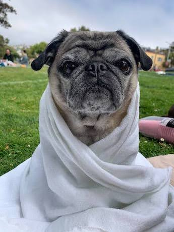

<section>
	<div>
		<p>
			Most of my time is actually not spent doing research, unsurprisingly! I love to spend time with my dog Dora, my family, and friends. I'm an avid cook, exploring all sorts of cuisines and fermentation techniques, and I host open door Sunday dinners most weeks with loved ones. I also love the outdoors, camping, hiking, cross-country skiing, and biking. I try to walk or bike everywhere I go (in a previous life I helped run a community bike repair center)! Finally, I have a thing for beautiful textiles, my first degree was in textile design and to this day I still knit regularly. Fun fact: my first coding experience ever was programming Jacquard looms!
		</p>

		<p align="center">
		
		<br>
		Dora the old sage.
		</p>
	</div>
</section>
